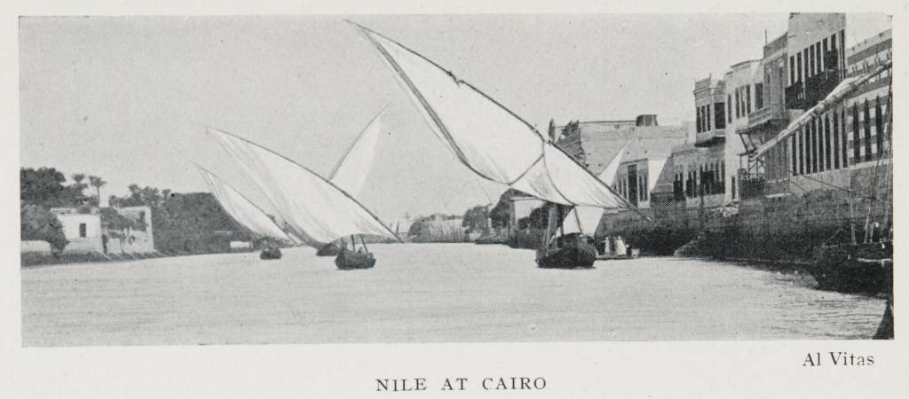
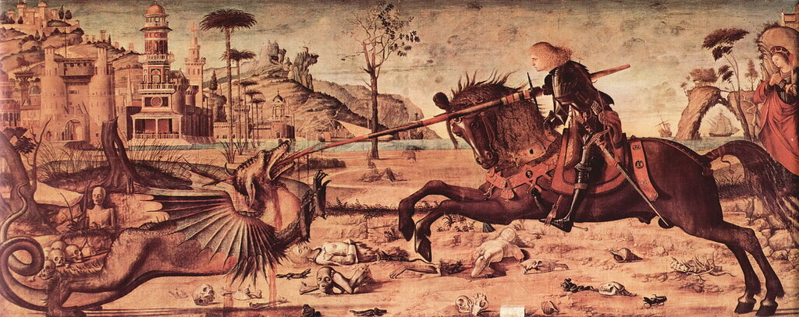
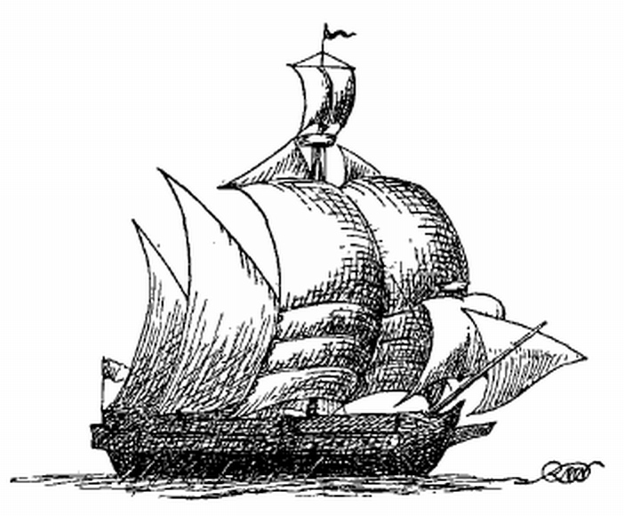

Мы уже говорили о тех кораблях, которые обеспечивали развитие морской торговли на Средиземном море в начале XV века. Правда, почти не касались судов каботажного, прибрежного плавания. Сейчас постараемся заполнить этот пробел.
В самом начале века более 80% каботажных перевозок в западной части Средиземного моря, а также на атлантическом побережье Андалусии и Португалии, обеспечивалось барками (barqua, barcha) (см. напр. Jacqueline Guiral-Hadziiossif, Valence, port méditerranéen au XVe siècle: 1410-1525, с.26). На барках совершались и первые плавания вдоль африканского континента. Помните, мы установили, что мыс Бохадор впервые в 1434 году обогнул Жил Эанеш. Сделал он это не на каравелле, а на барке. Для подтверждения обратимся к нашему первоисточнику – «Хронике открытия и завоевания Гвинеи» Гомиша Ианиша ди Зурара.
E finalmente, despois de doze annos, fez o iffante armar hûa barcha, daqual deu a capita-nya a huû Gil Eannes , seu seudeiro, que ao despois fez cavalleyro, e agasalhou muy bem, o qual seguindo a vyagem dos outros, tocado da-quelle meesmo temor, nom chegou mais que a as ilhas de Canarya, donde trouxe certos cati¬vos, com que se tornou pêra o regno. E foe esto no anno de Jhu. Xpo de mil e quatro centos e trinta e trez. Mas logo no anno seguinte, o iffante fez armar outra vez a dieta barcha, e chamando Gil Eannes a departe, o encarregou muy to que todavya se trabalhasse de passar aquelle cabo, e que ainda que por aquella vya¬gem mais nom fezesse, aquello terya por assaz.
И, наконец, спустя двенадцать лет, приказал инфант снарядить барку, капитаном коей поставил некоего Жила Ианиша, своего эшкудейру (коего впоследствии сделал кавалейру и принял весьма добро), каковой, следуя тому же пути, что и прочие, обуреваемый тем же страхом, доплыл не далее островов Канарии, откуда доставил некоторых пленников, с коими и возвратился в королевство. И было сие в год Иисуса Христа тысяча четыреста тридцать третий. Однако затем, на следующий год, приказал инфант снова снарядить оную барку; и, отозвав Жила Ианиша в сторону, много наказывал ему, дабы он все же потрудился пройти тот мыс; и что, даже если ничего больше не свершит в то путешествие, пусть почитает то достаточным.
(«Хроника…», гл. IX. Пер. Дьяконов О. И.)
Нам трудно сейчас с точностью сказать, какие технические характеристики имела «оная барка». Но есть некоторые косвенные свидетельства, которые помогут нам хотя бы в некотором приближении воссоздать ее облик. На обложке сборника с регистрами Генерального судьи Валенсии за 1404 год, относящимися к выдаче лицензий на экспорт товаров стратегической важности (оружия, металлов, строевого леса и т.п.) изображено судно, которое, скорее всего, и есть барка. К сожалению, мне не удалось разыскать это изображение, но есть его описание. Это высокобортное судно с прочной палубой («выдерживающей вес ста человек»), обшивкой, набранной вгладь (в карвель), с мощным высоким форштевнем, который заканчивается шпироном, украшенным флагом с короной; вдоль корпуса идут выступающие брусьями, – вельсы; транцевая плоская корма с ахтерштевнем, на который ниже ватерлинии навешен руль. На корме возвышается высокая надстройка. В носовой части корпуса имеются два клюза для якорных канатов. И, что является очень важным, на барке имеется одна мачта с прямым парусом на горизонтальном рее.
Сделаем свое заключение: барка – это не северный корабль типа кога (корпус уже не клинкерный, а набран вгладь), но это и не корабль средиземноморской традиции с латинскими парусами. Это гибридное судно имело грузоподъемность от 20 до 100 тонн (некоторые единичные барки достигали 400 тонн). Это было судно прибрежного плавания, плохо приспособленное к условиям открытого моря, прежде всего вследствие примитивного прямого парусного вооружения.
На Средиземном море в тот период господствовал латинский парус. О том, как он завоевал господство в этих водах мы писали раньше. (Полезными могут оказаться наши старые посты о возможности влияния парусного вооружения судов Индийского океана на развитие такелажа в Средиземноморье и о значении эволюции паруса внутри самого региона.)
О достоинствах кораблей, оснащенных латинским парусом, мы также неоднократно писали. Но имелись у них и существенные недостатки. Оснащенному латинскими парусами судну трудно менять галсы при лавировании. Если небольшие суда с таким парусным вооружением, как например, александрийские фелуки, при лавировании против ветра короткими галсами могут сохранять антенны и на наветренной стороне мачты, то для более крупных такой маневр может значительно снизить эффективность парусов. (Parry, The Age of Reconnaissance).

Фелуки на Ниле в районе Каира. Фото 1906 г.Автор неизвестен.
Более того, этот маневр может оказаться опасным, так как мачты на кораблях с латинским парусным вооружением не имеют носовых штагов, а обстенивание большого паруса создает очень мощные силы, которые не каждая мачта способна выдержать. Поэтому при смене галса проводилась довольно трудоемкая операция (мы ее описали в одном из предыдущих постов). Кроме того, латинский парус не имел рифов, так что при изменении силы ветра приходилось устанавливать новый комплект парусов, соответствующий обстановке. Площадь, а следовательно и вес латинского паруса, значительно превышала соответствующие показатели для прямых парусов. То же самое можно сказать и о весе больших составных антенн латинского паруса, длина которых была равна или даже превышала длину корпуса судна. А их требовалось и поднимать, и опускать довольно часто. Именно вследствие всех этих обстоятельств корабли с латинскими парусами требовали значительно больших по численности экипажей, чем равные им по водоизмещению суда с прямым парусным вооружением. К примеру, в XIV веке на средиземноморское судно грузоподъемностью 250 тонн с латинскими парусами необходим был экипаж численностью 50 человек, в то время как на парусник такой же грузоподъемности, но с прямыми парусами, требовалось всего двенадцать человек, плюс, быть может, 5-6 юнг (J.H.Parry).
В начале пятнадцатого века, когда стоимость перевозки морем становилась все более и более решающим фактором, мы наблюдаем возвращение прямого паруса на Средиземноморье, в первую очередь для вооружения большегрузных тихоходных купеческих судов. Однако это не было копированием тяжелых неманевренных парусных кораблей Северной Европы, как иногда считают. Моряки Средиземноморья соединили достоинства северных когов с многовековой традицией латинского паруса в своем регионе. К фалам, которыми поднимали реи прямых парусов они добавили топенанты, идущие к концам (нокам) реев, что дало возможность удлинить их, использовать вместо однодревковых реев составные, а следовательно, увеличить площадь парусов. Замена одиночной слабой снасти для поворота рея более мощными брасами и добавление брас-шкентелей, введение талей в оснастку булиней усовершенствовало управление парусами и позволило кораблю идти значительно круче к ветру. В полотнище паруса, в средней его части (по ширине) стали вставлять специальные клинья, goring cloths, которые дали возможность создать на каждом парусе два отдельных «ветряных мешка», чем повысить его эффективность. Этой же цели служила новая снасть – bowges, которая шла от средней части нижней шкаторины паруса, растягивая полотнище при ходе в крутой бейдевинд и взаимодействуя с булинями. Честно говоря, я не смог найти название этой снасти на других языках, кроме английского в старом англо-итальянском словаре
BOWGE, s. a rope fastened to the middle of the sale, to make it stand closer to ihe wind fune d’una vela, per far che prenda piu vento. To bowge a ship, foracchiare, bucacchiare un vascello.
Grande Dizionario Italiano ed Inglese, Volume 2 By Giuseppe Marco Antonio Baretti (1832)
Я продолжу поиски, и если повезет, напишу об этой снасти отдельно. А сейчас приведу полотно Витторе Карпаччо, на котором, скорее всего, изображен галеас с подобными снастями.

Витторе Карпаччо. Св. Георгий и дракон. 1502-1507.
Дадим прорисовку интересующего нас судна.

Снасти, идущие вниз от нижней шкаторины третьего бонета главного паруса галеаса как раз и есть bowges. Они не позволяли парусу раздуваться до неразумных размеров, делая его более плоским в центре.
И все же, несмотря на значительное усовершенствование такелажа кораблей с прямым парусным вооружением, они еще очень плохо ходили против ветра. Решением проблемы стало создание каравеллы – легкого быстроходного судна с латинским парусным вооружением. Но об этом в следующий раз.